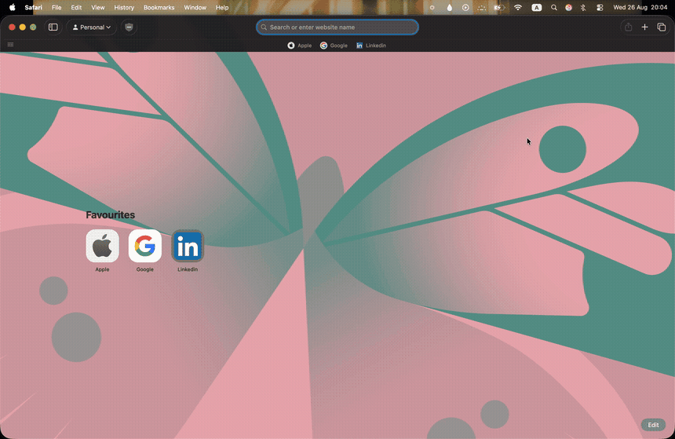

Stay hydrated.
Even in the darkest night.
The Batcomputer’s personal hydration protocol for your Mac.
Batman Reminder
Tactical WayneTech Hydration System
How Batman Reminder Works
Zero friction, zero Dock clutter. Engineered to keep you sharp and hydrated at your desk.
Install Batman Reminder
Download the free macOS application and launch it directly from your Mac menu bar.
Set Your Protocol
Choose your hydration goal, reminder interval, and quick-add water amounts to match your routine.
Stay Hydrated
Batman drops in silently from the menu bar when it's time to drink, keeping your streak alive.
Your Batcomputer Hydration Protocol
Every feature calibrated for maximum focus, effortless logging, and Gotham-tier aesthetics.
Smart Hydration Tracking
Track your daily water intake with precision telemetry and monitor live progress toward your goal.
Batman Reminder Overlay
Batman drops down smoothly from the top of your Mac screen with a cinematic hydration reminder.
Quick Water Logging
Log common water quantities instantly with customizable quick-add buttons and hotkeys.
Hydration Streaks
Build and defend daily hydration streaks. Gotham rewards discipline and unwavering consistency.
Smart Notifications
Receive native macOS notifications with customizable audio cues, snooze limits, and quiet hours.
Runs Quietly
Batman Reminder lives discreetly in your macOS menu bar without taking up room in your Dock.
See Batman Reminder in Action
Your personal Batcomputer, keeping you hydrated.

Getting a macOS Security Warning?
If macOS blocks the application from opening on first launch, go to System Settings → Privacy & Security, scroll down to the Security section, and select “Open Anyway”.
Frequently Asked Questions
Everything you need to know about the Batcomputer hydration system.
Yes. Batman Reminder is completely free to download and use. There are no subscriptions, paywalls, or hidden telemetry.
Batman Reminder is compiled universally for all modern Apple Silicon (M1, M2, M3, M4) and Intel-based Macs running macOS Sonoma (14.0) or macOS Sequoia (15.0) and later.
Yes. Batman Reminder lives quietly in your macOS menu bar without keeping an active window open or cluttering your Dock. It consumes virtually zero CPU (<0.1%) when idling.
Yes! You can configure your daily hydration quota (e.g. 2,000ml to 4,000ml), intervals (from 15 minutes to 2 hours), custom drop animations, audio cues, and quick-add water presets.
No. 100% of your hydration data, streaks, and timestamps are saved locally on your Mac's secure sandbox. No telemetry or personal information ever leaves your device.
Protect Gotham.
Protect Your Hydration.
“Even Batman needs water.”